About
Experiences
Jul, 2025 - Now
Assistant Researcher @ CS, THU
Co-Supervisor: Huaping Liu, focus on Embodied AI and Robotics.
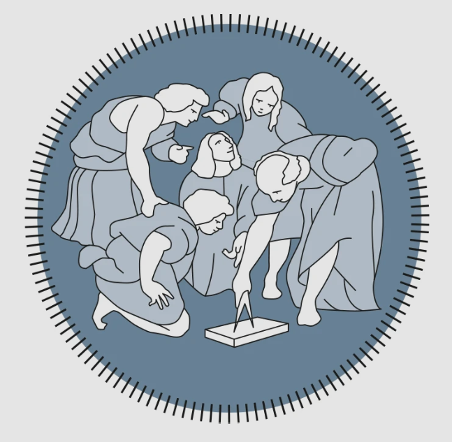
Apr, 2022 - Apr, 2025
Visiting Scholar @ Polimi
Supervisor: Prof. Hamid Reza Karimi, focus on Robotics.
Jul, 2022 - Oct, 2022
Internship Research @ Guangming Laboratory
Supervisor: Prof. F. Richard Yu, focus on Multi-robot SLAM and Edge-computing.
Publications ( / )
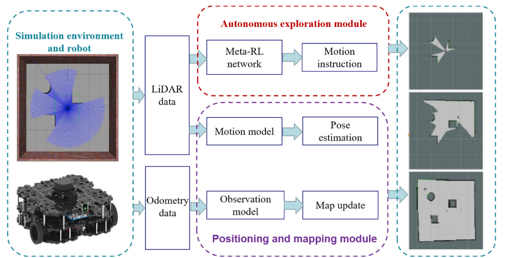
Transfer learning-based sparse-reward meta-Q-learning algorithm for active SLAM
Expert Systems with Applications, 2025
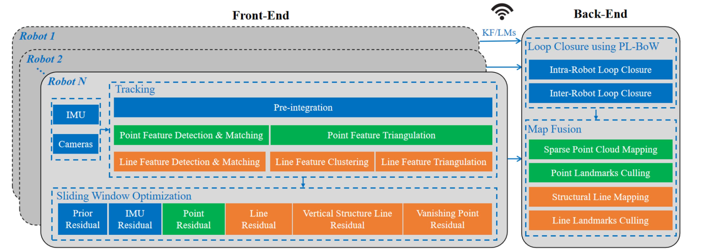
CPL-SLAM: Centralized collaborative multi-robot visual-inertial SLAM using point-and-line features
IEEE Internet of Things Journal, 2025
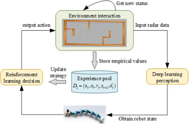
An active SLAM with multi-sensor fusion for snake robots based on deep reinforcement learning
Mechatronics, 2024
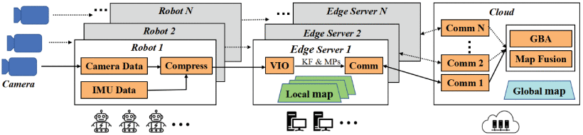
Edge-assisted multi-robot visual-inertial SLAM with efficient communication
IEEE Transactions on Automation Science and Engineering, 2024
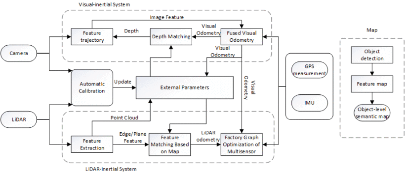
A multisensor fusion with automatic vision-LiDAR calibration based on factor graph joint optimization for SLAM
IEEE Transactions on Instrumentation and Measurement, 2023
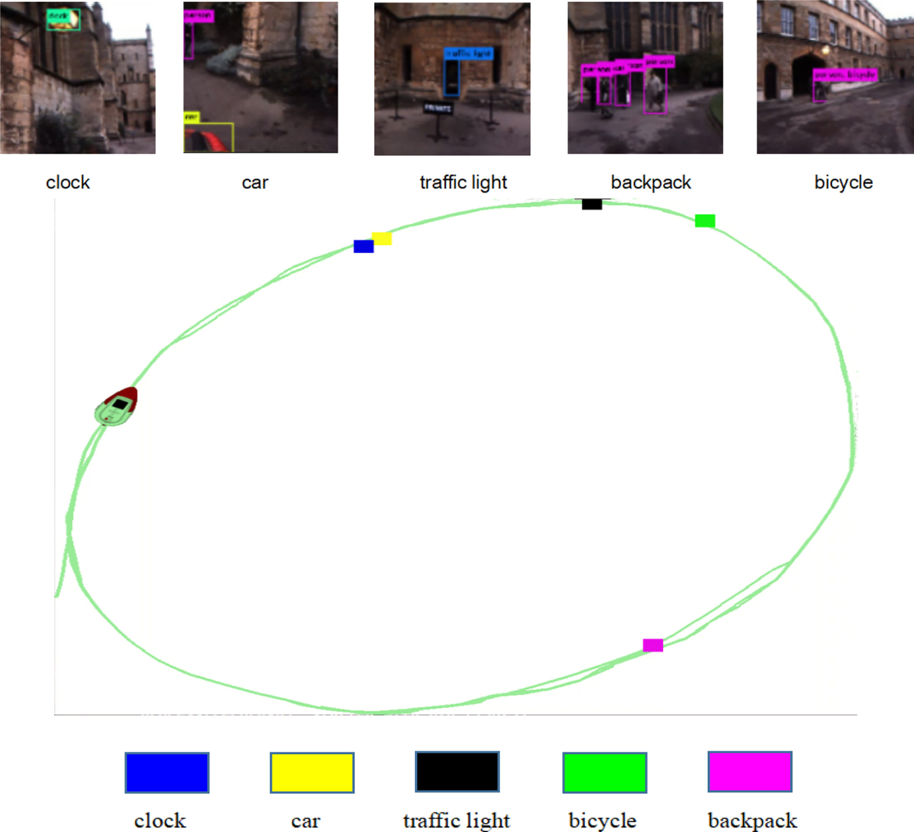
Vision-IMU multi-sensor fusion semantic topological map based on RatSLAM
Measurement, 2023
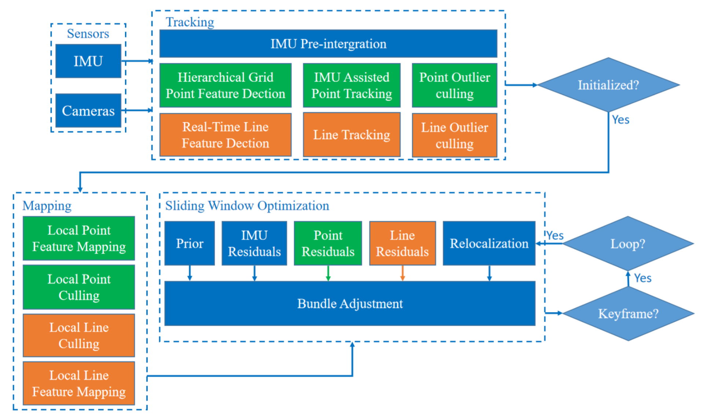
A real-time stereo visual-inertial SLAM system based on point-and-line features
IEEE Transactions on Vehicular Technology, 2023
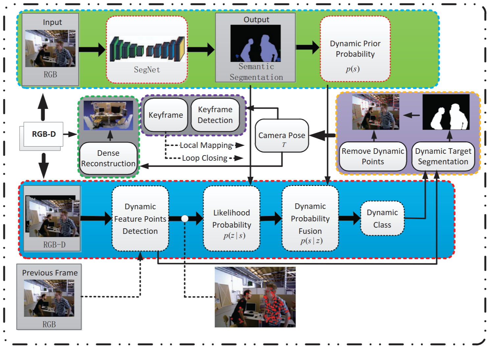
DPF-SLAM: Dense semantic SLAM based on dynamic probability fusion in dynamic environments
IEEE RCAR, 2022
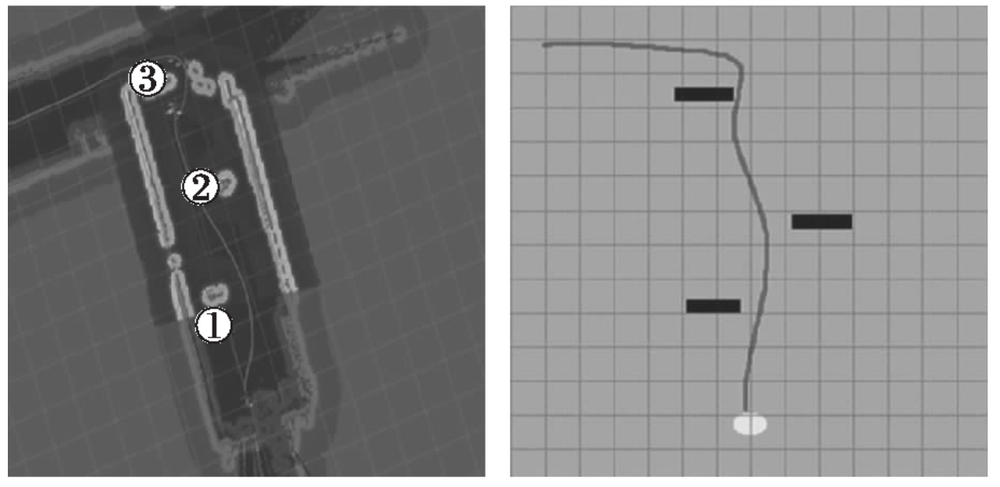
基于ROS的移动机器人自主建图及路径规划
燕山大学学报, 2022
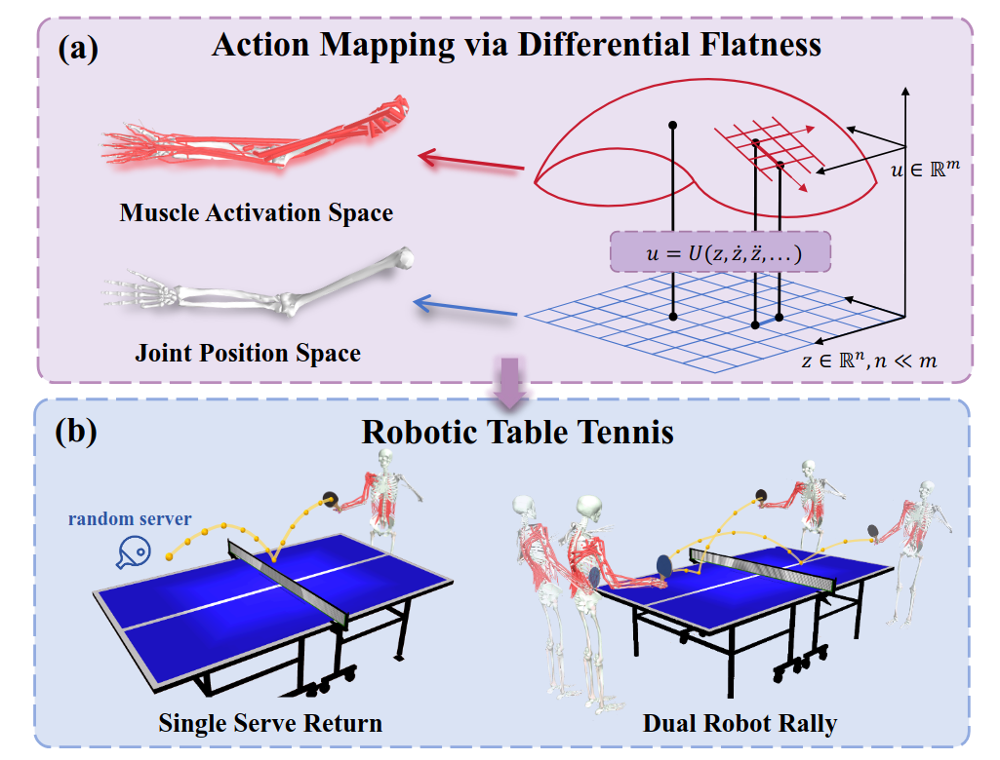
Diff-Muscle: Efficient Learning for Musculoskeletal Robotic Table Tennis
arXiv preprint arXiv:2603.08617, 2026
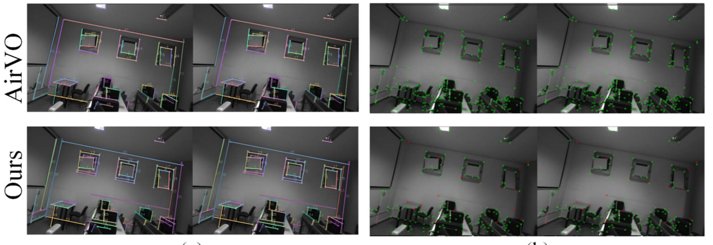
A Robust and Efficient Visual-Inertial SLAM Using Hybrid Point-Line Features
IEEE Robotics and Automation Letters, 2025
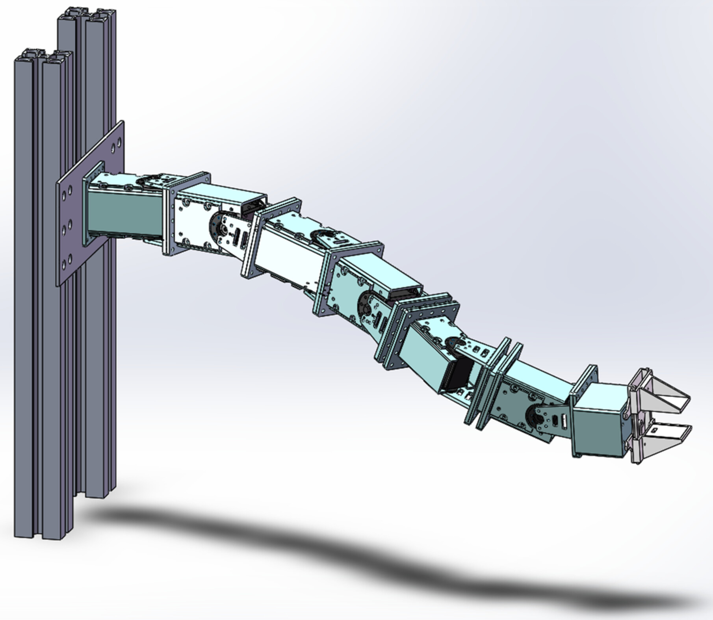
Multiple Population Genetic Algorithm-Based Inverse Kinematics Solution for a 6-DOF Manipulator
Journal of Field Robotics, 2025
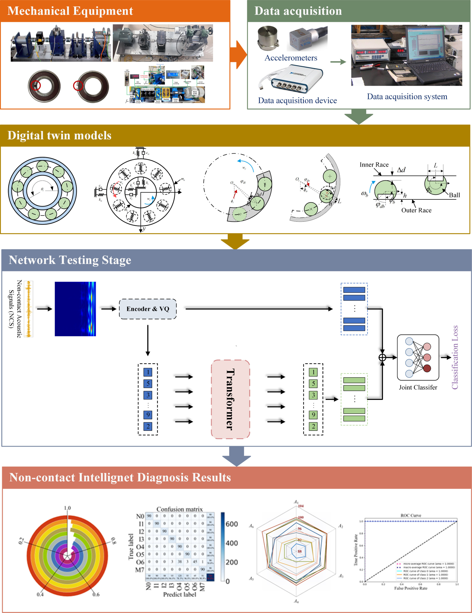
A novel digital twin-enabled three-stage feature imputation framework for non-contact intelligent fault diagnosis
Advanced Engineering Informatics, 2025
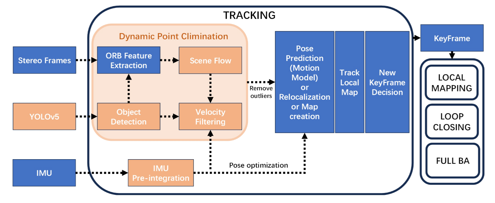
CD-SLAM: A real-time stereo visual-inertial SLAM for complex dynamic environments with semantic and geometric information
IEEE Transactions on Instrumentation and Measurement, 2024

Dynamic SLAM: A visual SLAM in outdoor dynamic scenes
IEEE Transactions on Instrumentation and Measurement, 2023
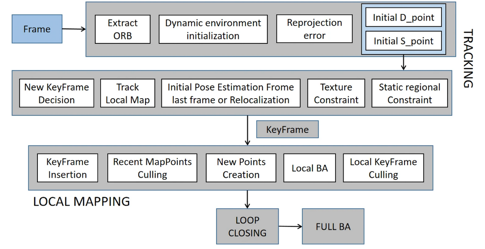
An improved multi-object classification algorithm for visual SLAM under dynamic environment
Intelligent Service Robotics, 2022
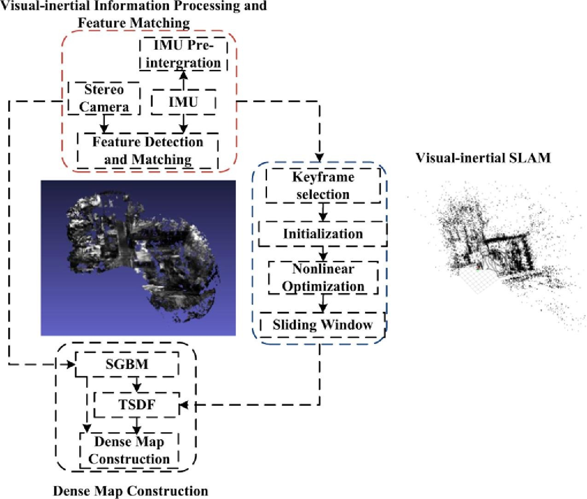
Dense point cloud map construction based on stereo VINS for mobile vehicles
ISPRS Journal of Photogrammetry and Remote Sensing, 2021
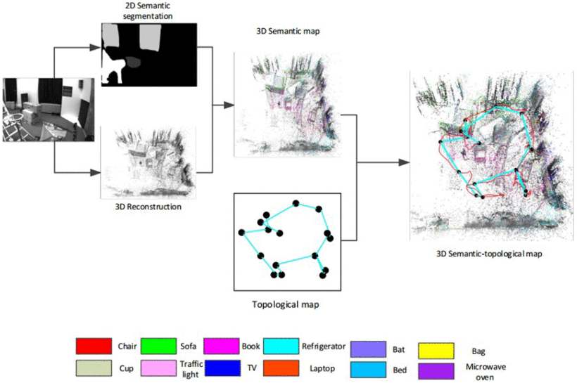
Hybrid semi-dense 3D semantic-topological mapping from stereo visual-inertial odometry SLAM with loop closure detection
IEEE Transactions on Vehicular Technology, 2020